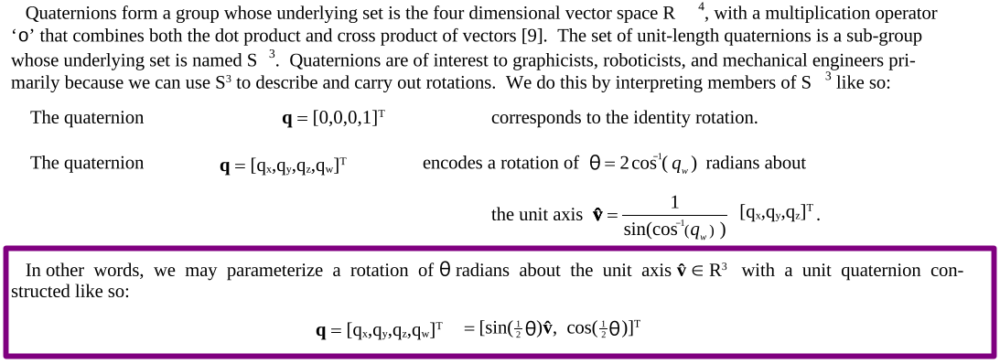
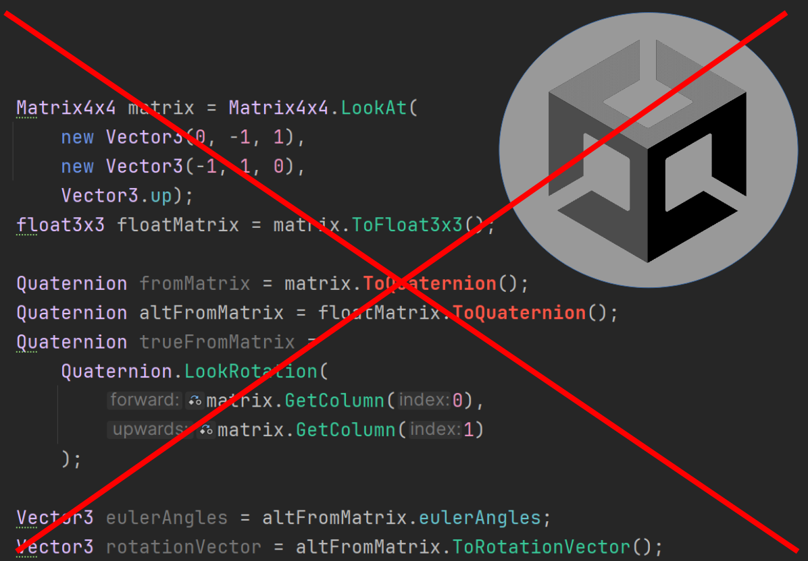
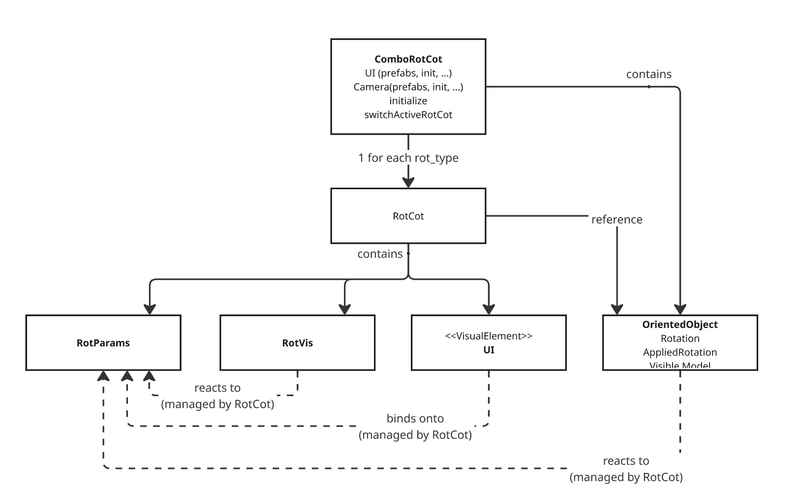
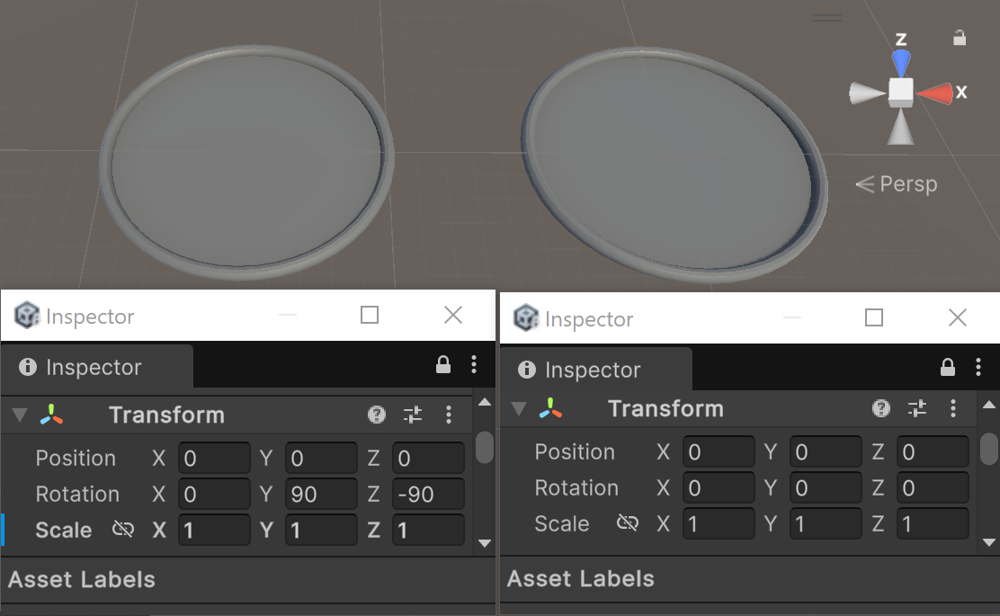
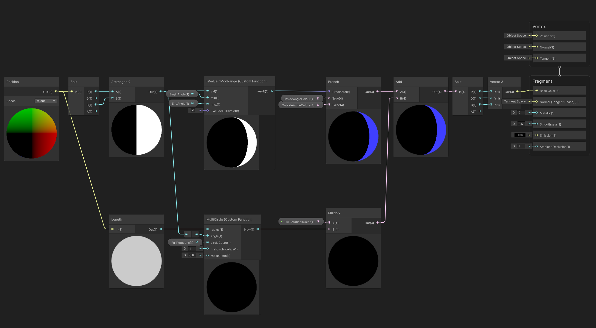
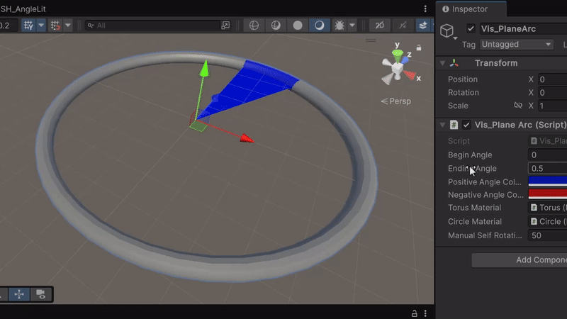
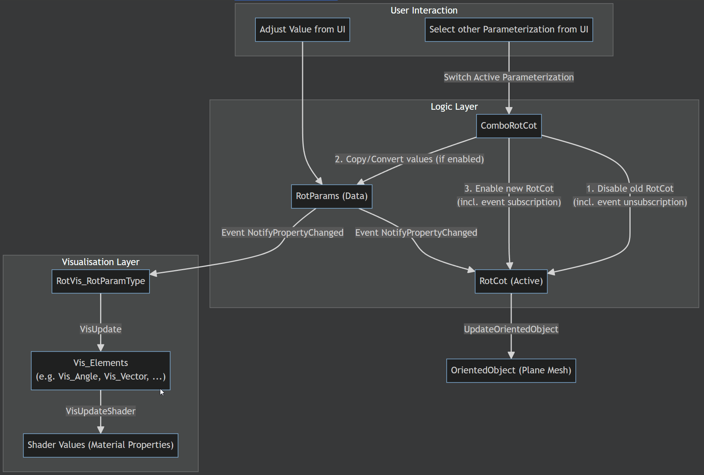
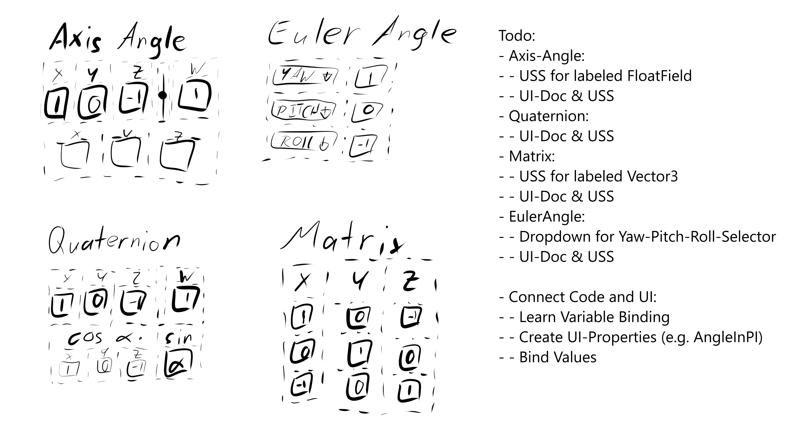
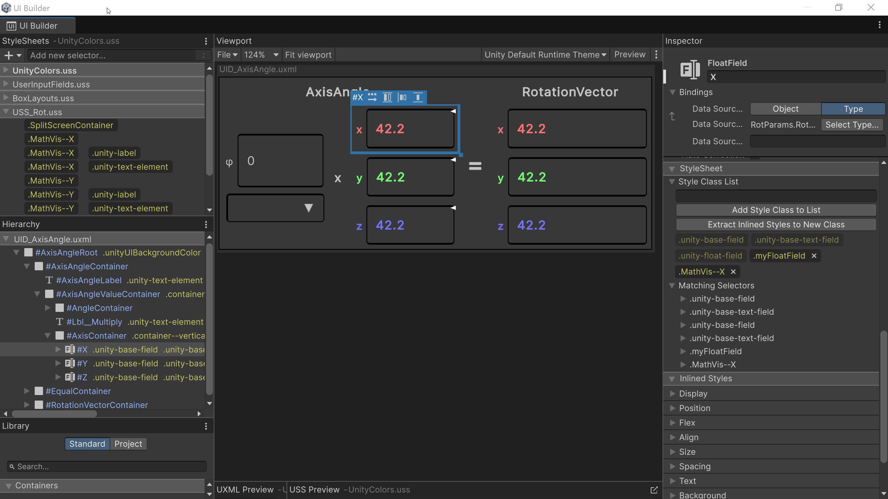
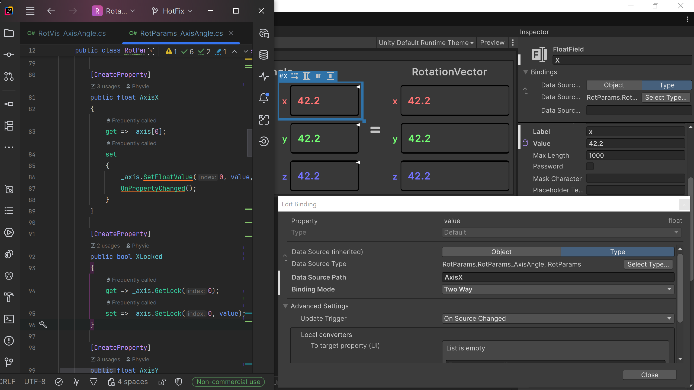

Behind the Scenes—Backend Math Code
To create a visualization of the different rotation parameterizations, I first had to create a coding backend that can handle the mathematics. For that purpose I started with research, followed by creating a code architecture and lastly implementing the classes. The example below shows my my workflow exemplified on how I implemented the Quaternion class & specifically the exponential map.

For a full overview I read not only game dev sources, but also math sources.
full-source: Grassia 1998, Practical Parametrization of Rotation
https://www.cs.cmu.edu/~spiff/moedit99/expmap.pdf

In my bachelor thesis I rephrased the knowledge from the math papers to be more accessible to game developers. (The rotation images were taken in the finished visualization tool.)

I considered using the classes provided by unity for the rotation parameterizations; i.e. Quaternion & Matrix4x4.
However, there are multiple problems with that:
First, there is no specific class for Euler angles and rotation vectors, as both are handled via the Vector3 class in combination with functions spread across Quaternion, Matrix and Vector3 classes. Second, the unity-built-in classes aren't accessible enough. e.g. their variables can't be bound to AI in the way I wished for, nor can there be a custom property drawer for them.
My solution: For the sake of consistency (one parametrization = one class) and more control, I decided to write my own rotation math library. Thus, I had to research the mathematical functions, implement them and create a code architecture.
The example below shows my workflow exemplified based on my research and implementation of the quaternion class and the exponential map.

{kind=link}
{kind=link}
public abstract class RotParams_Base : INotifyPropertyChanged
{
...
public abstract void ConvertAndCopyValues(RotParams_Base toConvert);
public abstract RotParams_Quaternion ToQuaternionParams();
...
}
public class RotParams_Quaternion : RotParams_Base
{
...
public override void ConvertAndCopyValues(RotParams_Base toConvert)
{
toConvert.ToQuaternionParams(this);
}
...
}
public class RotParams_AxisAngle : RotParams_Base
{
public override RotParams_Quaternion ToQuaternionParams(RotParams_Quaternion quaternionParams)
{
bool _enforceNormalisation = quaternionParams.EnforceNormalisation;
quaternionParams.EnforceNormalisation = false;
float halfAngle = AngleInRadian * 0.5f;
float s = Mathf.Sin(halfAngle);
quaternionParams.W = Mathf.Cos(halfAngle);
quaternionParams.X = NormalisedAxis.x * s;
quaternionParams.Y = NormalisedAxis.y * s;
quaternionParams.Z = NormalisedAxis.z * s;
quaternionParams.EnforceNormalisation = _enforceNormalisation;
return quaternionParams;
}
}
The edited code snippet to the left showcases the abstraction levels in the implementation of parameterization conversions.
The full class are available here: Quaternion , Axis Angle
public class ComboRotCot : MonoBehaviour
{
[SerializeField] private RotCotAxisAngle rotCotAxisAngle;
[SerializeField] private RotCotQuaternion rotCotQuaternion;
[SerializeField] private RotCotEuler rotCotEuler;
[SerializeField] private RotCotMatrix rotCotMatrix;
private RotCot_GenericBase _activeRotCot;
...
private void SwitchActiveRotCot(RotCot_GenericBase newActiveRotCot)
{
if (_activeRotCot == newActiveRotCot)
{
return;
}
if (_activeRotCot != null)
{
_activeRotCot.enabled = false;
}
if (ConvertRotParamsOnSwitch && _activeRotCot != null)
{
newActiveRotCot.GetRotParams_Generic().ConvertAndCopyValues(_activeRotCot.GetRotParams_Generic());
}
_activeRotCot = newActiveRotCot;
if (newActiveRotCot == null)
{
Debug.LogWarning($"{nameof(SwitchActiveRotCot)} just switched ActiveRotCot to null");
return;
}
//OnEnable handles further interactions (event subscriptions, VisUpdate(), OrientedObject.SetRotation(), ...)
_activeRotCot.enabled = true;
}
...
}
The ComboRotCot script is responsible for managing the switches between parameterizations. The snippet to the left shows how switching parameterization works. Any further necessary function calls are delegated to the RotCot-class (responsible for connecting a specific parameterization with its visualization, UI and the plane-object).
The full code is available here: ComboRotCot , RotCot_Base
(in combination with the other worksteps): The plane is rotated by the two unit quaternions, which share a rotation axis (yellow), but differ in their angle.
Behind the Scenes—Mathematics Visualization
Once I had the code finished, the next step was to create the visual representation. This meant not only modeling the object & creating shaders, but also creating a code architecture which adjusts the visualization according to parameter changes & parameter conversion. Ideally while keeping the mathematical backend independent of the visualization.

At first I searched inspiration & references. Two of my most relevant sources were:
Euler (gimbal lock) Explained - GuerrillaCG ,
Visualiting Quaternion - Ben Eater, Grant Sanderson

I start projects by sketching visuals and noting to-dos.
This Screenshot shows plans for three visualizations (quaternions and axis-angle share one due to similarity in their functionality). Originally, I planned runtime gizmos for in-scene parameter manipulation - the dark-blue-curved arrows. They were deprioritized later.

Though I have worked with maya before, I decided that for this project I learn blender to have a comparison to a freeware modeling program.

Transfer the meshes from blender to Unity resulted in a problem: Blenders & Unity's coordinate systems are different. Also, the adjustments in the blender default exporter rotate whole .fbx objects (left-object / Inspector), not individual meshes. However, my further programming needed the meshes to be unrotated, such that I can rotate them myself according to the underlying rotation parameter. As a result, I wrote my own blender exporter that uses rotation matrices to transform the actual meshes before exporting (right-object / Inspector).

As I like to work with charts, I used shader-graph for the angle-shaders. However, to keep it more orderly, I wrote the more complicated math functions as custom-hlsl-functions. E.g., IsValueInModRange calculates whether an angle is between two other angles respecting the modular nature of angles.
{kind=link}

A rotation-shader during bug-testing.

Multiple layers of code keep the individual pieces decoupled: Parameters are independent of the UI, by using unity's in-built UI-binding (see UI ) and the manager class ComboRotCot ((see Backend ). Once a parameter changes, it sends the NotifyPropertyChanged-Event, such that it is independent of its visualization script. Lastly, the parametrization visualization script references individual reusable visualization element scripts (e.g., the visualization script for an axis-angle rotation gives values to a script to visualize angles).

In combination with the UI, the user can adjust the Euler angles freely.
Behind the Scenes—Frontend User Interface
With a finished backend and visualization, the last step was to create a user interface. Throughout this process, I started from sketches, continued with Unity UI Toolkit implementation and lastly binding to the backend. One specifically interesting challenge was to ensure the user can mostly freely type in values, while ensuring the parametrization remains valid. The example below focuses on the implementation of the UI for the axis-angle-rotation-parameters; specifically the x-value.

To start with the UI, I made a rough sketch of how I want the UI to look, as well as a brief to-do-list.

For this project I learned to work with unity's UI Toolkit.
--- UnityColors.uss --- //sets a basic visual coherence; e.g. field-background are dark-gray
.unityUIFieldColor VisualElement,
.unityUIFieldColor .unity-base-field__input
{
background-color: rgb(56, 56, 56);
}
...
--- UserInputFields.uss --- //modifiers for repeating elements; e.g. any input-fields with a max & minimum size
.fieldStyle--minimal-one-line {
min-height: 24px;
max-height: 48px;
}
...
--- USS_AxisAngle.uss --- //specific layout of the elements in an axis-angle parametrization; e.g. the layout of the three components in the rotation axis
#AxisAngle__AxisContainer {
flex-grow: 1;
align-items: stretch;
justify-content: space-around;
}
...
I structure the UI styling via a mixture of BEM and cascade layering: The lowest layer defines class-based styling for reusable elements (e.g. input-fields.). The middle layer defines class-based variation of the styles, that overwrite via the cascade. Topmost are the stylesheets for the parameterizations. The elements in the uxml are named by BEM rules and their styles overwrite via specificity.

UI-Toolkits binding feature connects the UI with the backend. The image shows how the UI's x-Axis float-field is bound to the RotParams_AxisAngle-AxisX-property.
(Left in image: the AxisX property enables changes specific changes to the x-value while keeping the full axis normalized; Right in image: binding)
The user can either adjust the rotation vector or the axis or the angle. After locking the y-value of the axis, a change of the z-value only adjusts the x-value, inversely, while y stays constant.